Announcements
Happy Chinese New Year!
February 1 2022, 9:00 A.M.
Mapúans, may you have a wonderful celebration of the Chinese New Year with your loved ones and a prosperous Year of the Water Tiger full of success, happiness, and good health. Kung Hei Fat Choi!
Announcement!
January 31, 2022, 8:58 P.M.
ADVISORY: Tomorrow, February 1, 2022, is declared a special non-working holiday in observance of the Chinese New Year. There will be no online classes for the students. #WalangPasok
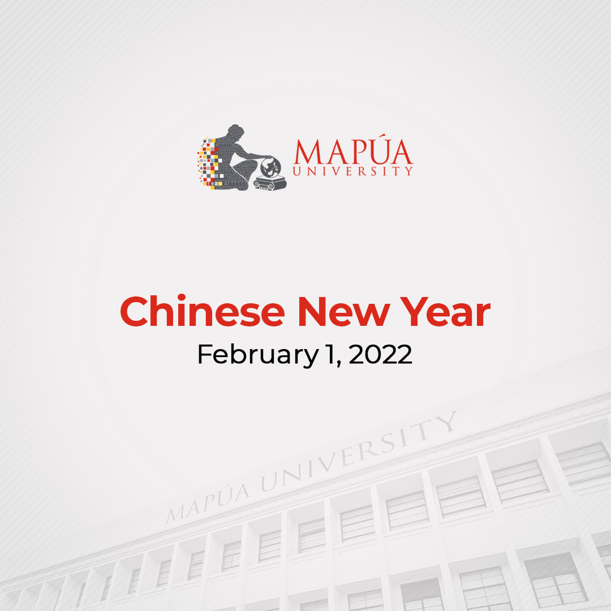Build On Your Dreams
January 27 2022, 6:54 P.M.
On its 97th year, Mapúa builds on its foundations with its resolve to harness the potential of the future to bring Filipino learners to the forefront of learning and global competitiveness. Applications for Academic Year 2022-2023 are ongoing. Apply online at https://www.mapua.edu.ph/ApplyNow.aspx.

Start Things
January 26 2022, 8:57 P.M.
Maintaining a work-life balance is a daily challenge. Discover how one of Mapúa's respected professors, Dr. Yogi Tri Prasetyo from the School of Industrial Engineering and Engineering Management, earned his MBA and Ph.D. at the age of 27 and mastered the art of balancing work and his passion for exploring the world's deep seas as a freediver in the 3rd episode of Start Things with Anj Lingat.

Announcement!
January 25 2022, 7:35 P.M.
ADVISORY: Mapúa University will reschedule the remaining class weeks of 2nd Quarter A.Y. 2021 - 2022 for both undergraduate and graduate programs due to the health break observed last January 14 to 21, 2022. The enrollment for 3rd Quarter A.Y. 2021 - 2022 will be moved to February 15 to 18, 2022. Take note of the updated schedules listed below.
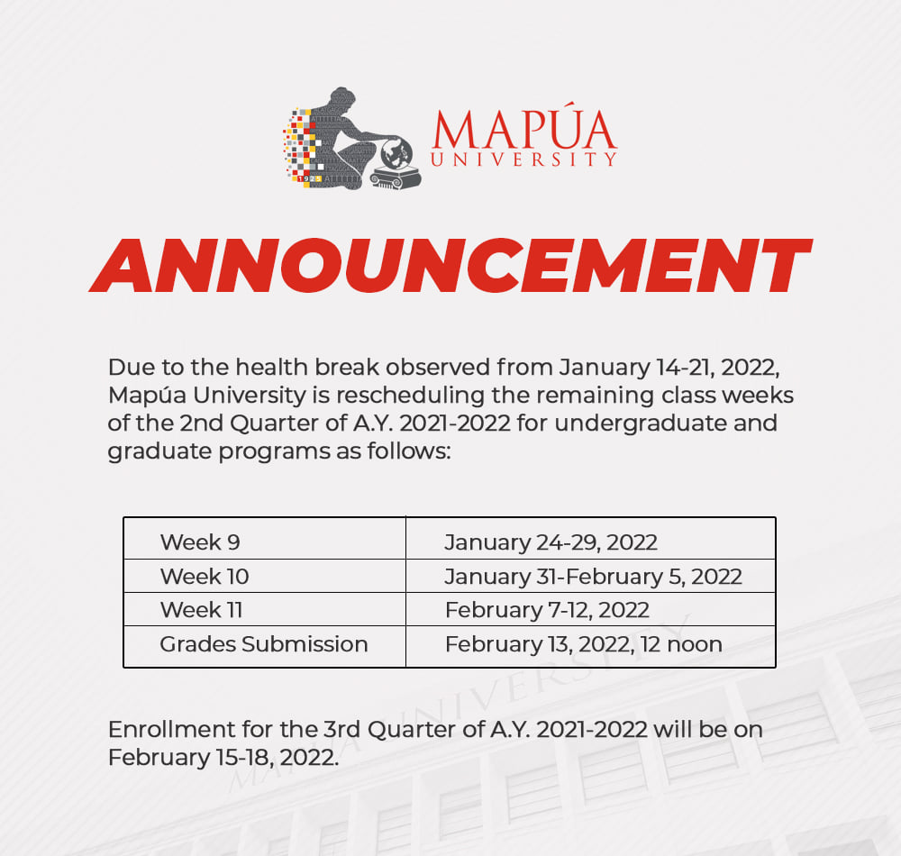MAPUA's 97th Year!
January 25 2022, 5:00 P.M.
Mapúa University’s 97th Foundation Week, with the theme "Tracing the Roots and Building upon the Foundation," starts the 3-year journey to its grand centennial. As we celebrate our 97th year, let's take a look at our milestones through the Virtual Photo and Video Exhibit at https://bit.ly/MapuaExhibit. Together let us continue making history!
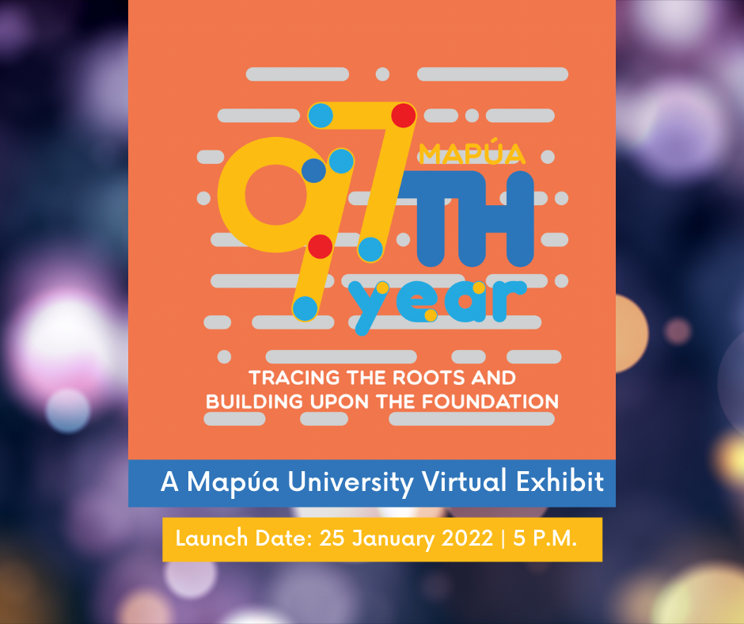MAPUA Foundation Week
January 21 2022, 7:04 P.M.
Mapúans, we know you are excited about our week-long 97th Foundation Week celebration! Here is the line-up of events from January 24 to 28. See You There!
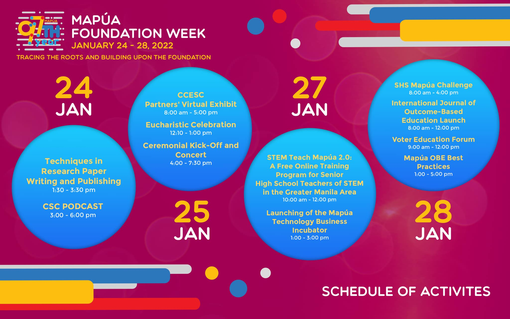Partner's Virtual Exhibit
January 18 2022, 3:41 P.M.
Upskill and increase your competency with Mapua - Center for Continuing Education and Special Competencies (CCESC)'s training courses. Check out CCESC’s Partner’s Virtual Exhibit on January 25, 2022, from 8 a.m. to 5:30 p.m., to learn about their short courses and free webinars in Engineering, IT, and Business Management. Participants will have the chance to win a free 3-month LinkedIn Learning subscription via the raffle. To register for the Partner’s Virtual Exhibit, please visit https://forms.gle/Up6abSoW6bFfd2Cw9.
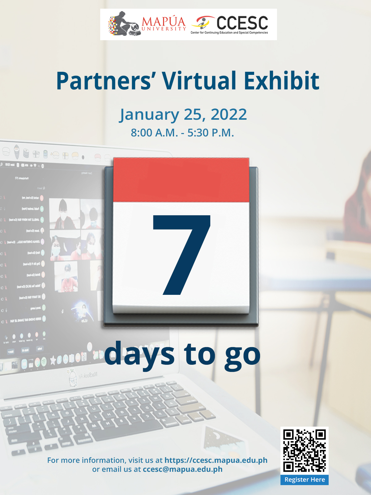Start Things
January 17 2022, 8:11 P.M.
Thinking of turning your passion into a profitable business? Learn some important tips on creativity and strategy from Radi Custorio, Mapúa Business Administration alumnus and owner of Aleros PH, producer of flavorful hot sauces, in the second episode of Start Things with Anj Lingat at Radio Cardinal’s Cardinal Conversations. Listen to the podcast at https://spoti.fi/31ZvekO

Announcement!
January 14 2022, 5:10 P.M.
In accordance with the declaration of a health break by the City Government of Manila, please be informed that work is suspended for Mapúa University's Intramuros Campus from January 14 to 21, 2022. However, all essential or urgent projects and activities that have been scheduled to be completed or done will continue during the said period.
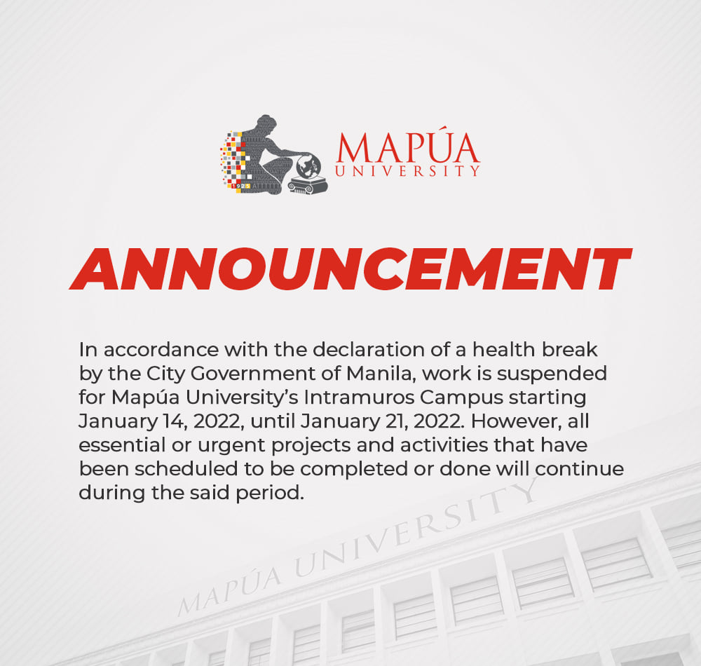Announcement!
January 13 2022, 5:06 P.M.
Mapúans, online classes for both Intramuros and Makati campuses will be suspended from January 14 to 21, 2022. Furthermore, superseding the Academic Memo released by the University last January 10, 2022, please take note of the following guidelines. Stay safe!
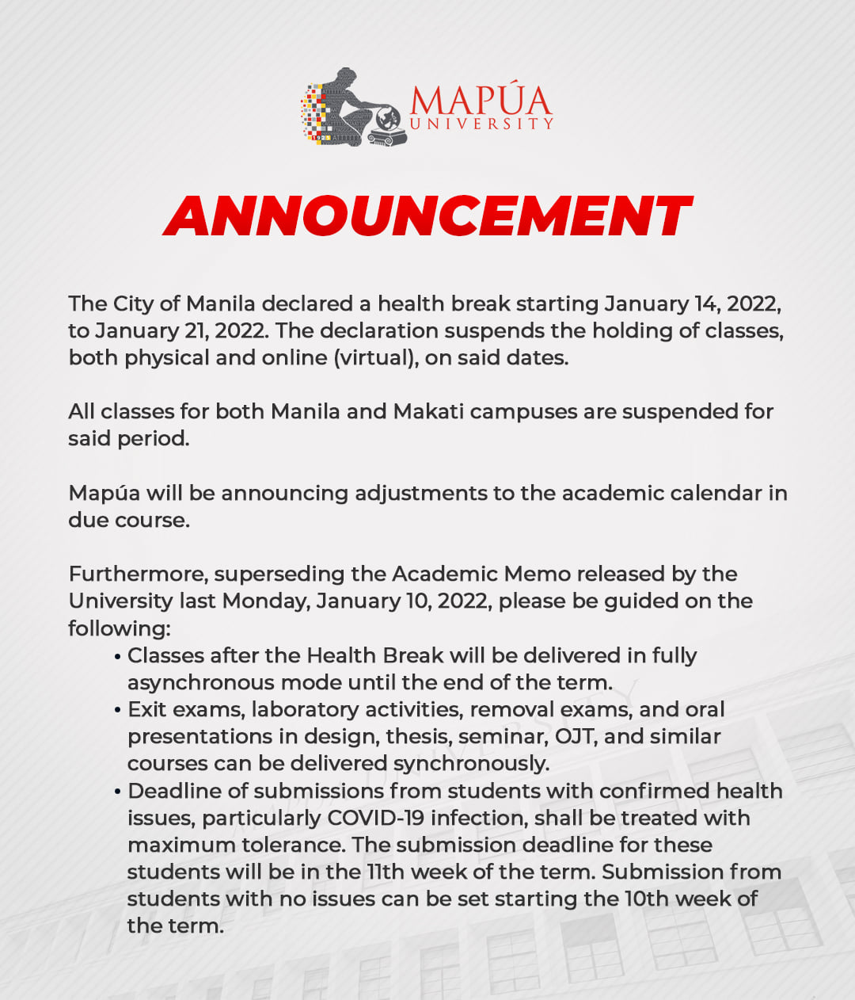Announcement!
January 10 2022, 4:08 P.M.
Due to the increasing number of COVID-19 cases in the country, Mapúa shall deliver all online classes in fully asynchronous mode from January 11 to 18, 2022, to ease academic pressure for all students. During the said period, there shall strictly be no synchronous classes to be conducted and no assignments, submissions, and assessments (quizzes and exams) required. All learning materials will be uploaded in the Cardinal EDGE for students to access at their own pace and convenience.
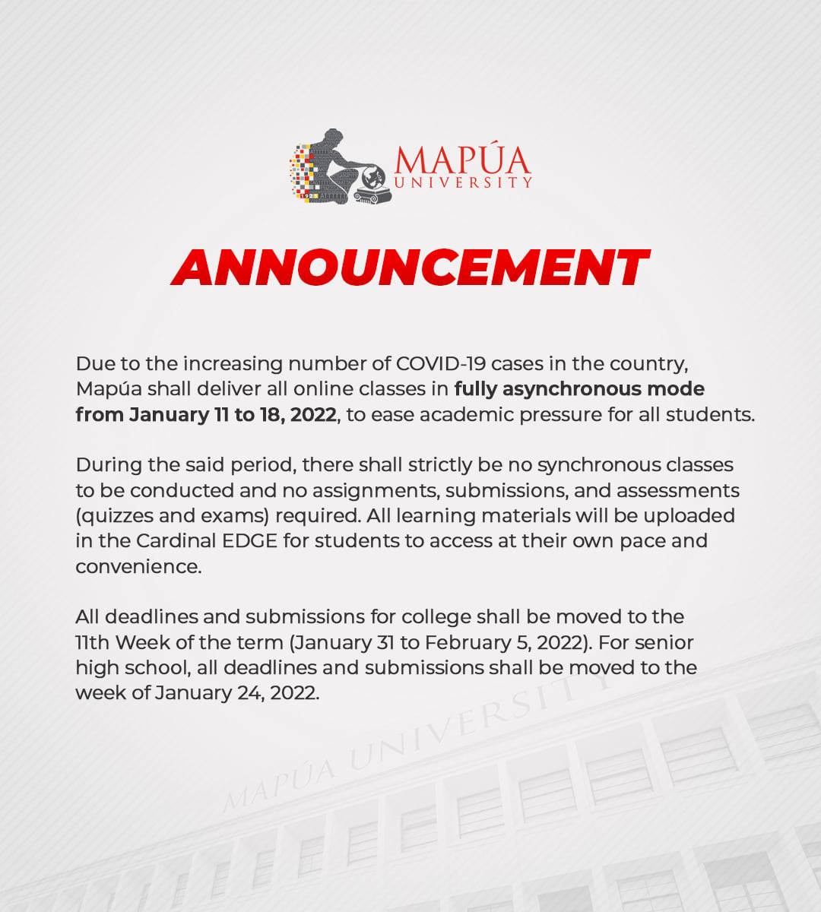Start Things
January 8 2022, 7:27 P.M.
Thinking of starting new things this 2022? Get inspiration from a Mapúa Business Administration alumna who successfully started her coffee business amid the pandemic. Listen to Pam Jacobe, owner of Perk Up Coffee & Tea, as Anj Lingat of Radio Cardinal interviews her in the first episode of the Start Things podcast in Cardinal Conversations. Stream the episode now at https://spoti.fi/3f0wuHm.

How are you Mapuan?
January 7 2022
We would like to know how our students and faculty are doing amid the surge of COVID cases in the country. The Central Student Council, Council of Presidents, and Council of Organizations are conducting a survey to know the health conditions of Mapúans. The survey is for all SHS and college students and faculty members. Please complete the survey at https://forms.gle/Zvv7xFChmQfKzgqK6 using your Mapúa email or MyMail accounts.
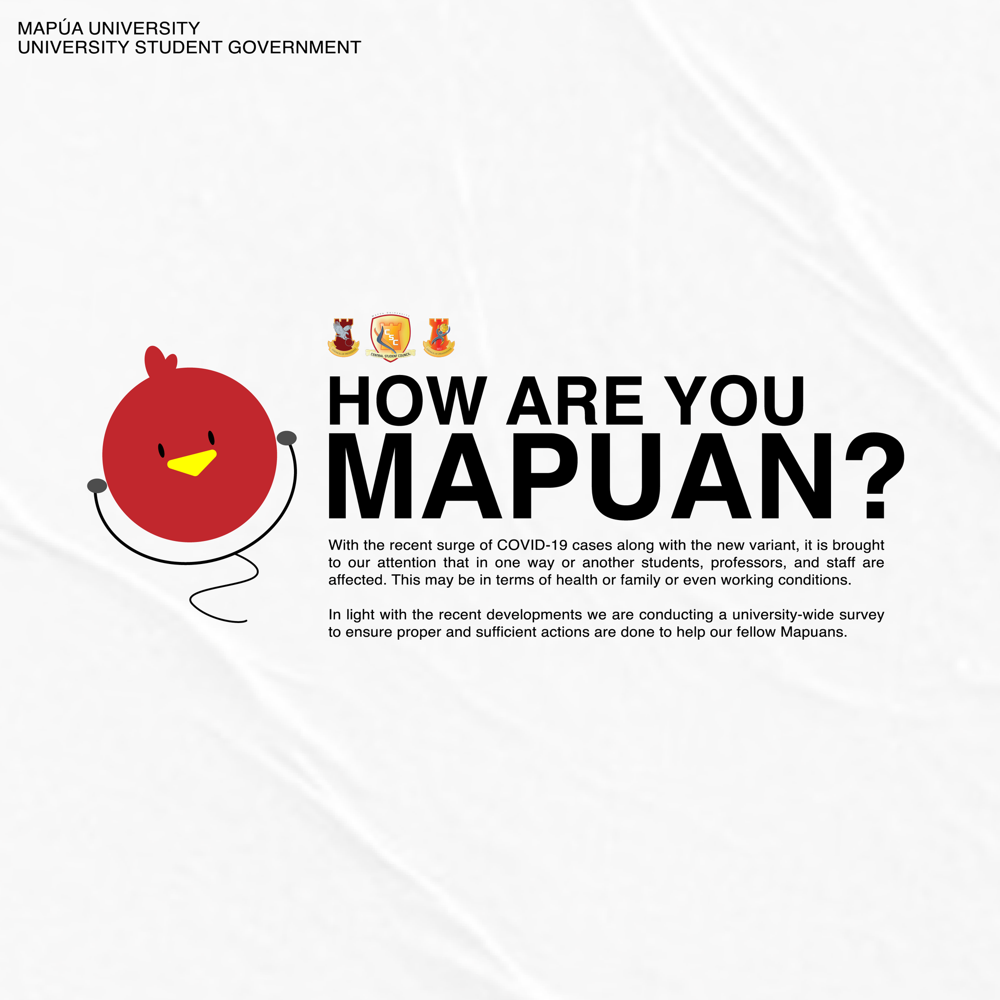Start Things
January 6 2022, 5:11 P.M.
Let’s start the year with a fresh perspective and new ideas as the Mapúa Radio Cardinal brings you a new segment of Cardinal Conversations, and be inspired by the best Mapúan builders, innovators, and creators in Start Things with Anj Lingat every Saturday at 7 p.m., beginning January 8, 2022. Stay tuned and don’t forget to follow the Facebook page of the Mapúa Radio Cardinal for the latest updates.
1st Virtual Job Expo 2022
January 3 2022, 6:46 P.M.
Mapúans, the Office of International Career and Exchange Programs invites you to Mapúa's 1st Virtual Job Expo 2022 from January 17 to 21. Grab this opportunity to connect and interact with Mapúa University's partner companies and world-class alumni for a wide range of career opportunities in different fields. Interested participants may register at https://forms.gle/HqDBUWfcpRV3ouzN7.
Our Topnotcher!
January 3 2022, 6:07 P.M.
Mapúans, the Office of International Career and Exchange Programs invites you to Mapúa's 1st Virtual Job Expo 2022 from January 17 to 21. Grab this opportunity to connect and interact with Mapúa University's partner companies and world-class alumni for a wide range of career opportunities in different fields. Interested participants may register at https://forms.gle/HqDBUWfcpRV3ouzN7.

Happy New Year!
January 1 2022
May all your endeavors bear fruit and your dreams come true as the new year brings joy, hope, and love. Wishing you and your family a healthy, prosperous, wonderful, and normal year ahead, Mapúans! Happy New Year!
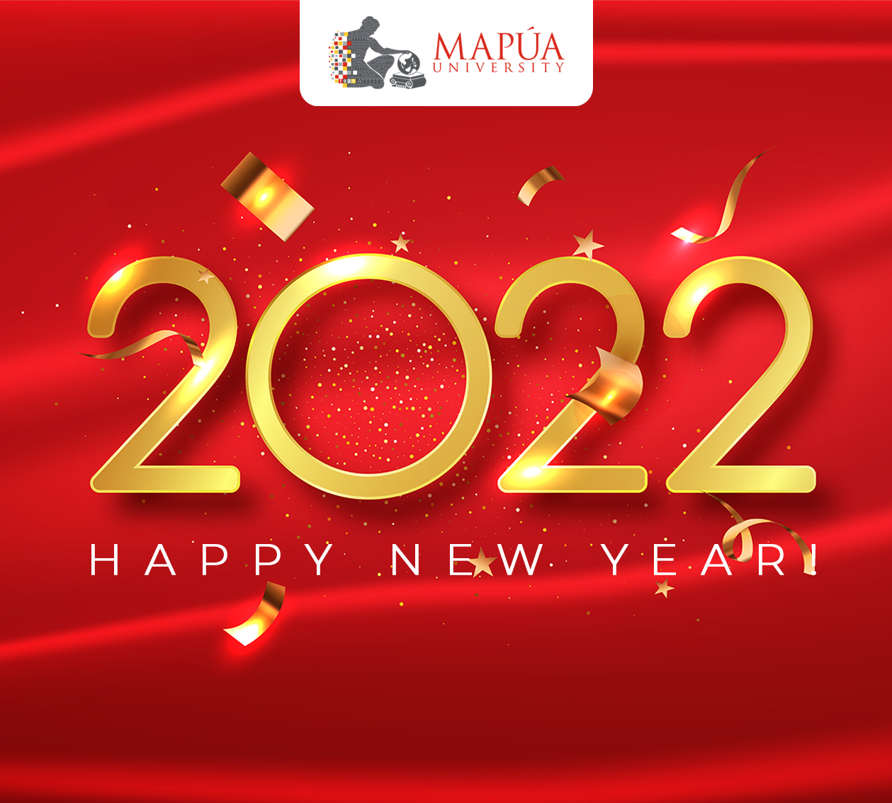Webinars
Mapúa Central Student Council
January 27 2022, 11:27 P.M.
HAPPENING NOW: Let's become agents of positive change in our country. Join the discussion on the importance of exercising our right to vote and making an informed decision in this Voter Education Forum organized by the Mapúa Central Student Council.

Social Media Marketing
January 27 2022, 10:09 A.M.
Learn how you can maximize social media in building your brand, creating awareness, and driving business objectives in this free webinar on Social Media Marketing organized by the Center for Continuing Education and Special Competencies.

STEM Teach Mapúa
January 27 2022, 9:56 A.M.
Mapúa University invites Junior High School and Senior High School teachers to the second run of its STEM Teach Mapúa, a series of free online upskilling training in Science, Technology, Engineering, and Mathematics (STEM) subjects, that will run from January 28 to February 28, 2022, in collaboration with the Department of Education. Interested participants may join the STEM Teach Mapúa launch and orientation this coming Thursday, January 27, 2022, at 10 a.m. through Zoom.

The power of Podcasting
January 26 2022, 10:11 P.M.
Join "The Power of Podcasting: A Multimedia and Broadcast Webinar" in a podcast setup and get tips from Josel Gaston, Chief Mindfulness & Creations Officer of World Stage International and a podcast producer, as she shares the process, challenges, and strategies in creating a podcast on January 29, 2022, 1 p.m. to 3 p.m. Interested participants may register now at https://bit.ly/3GZYyam.
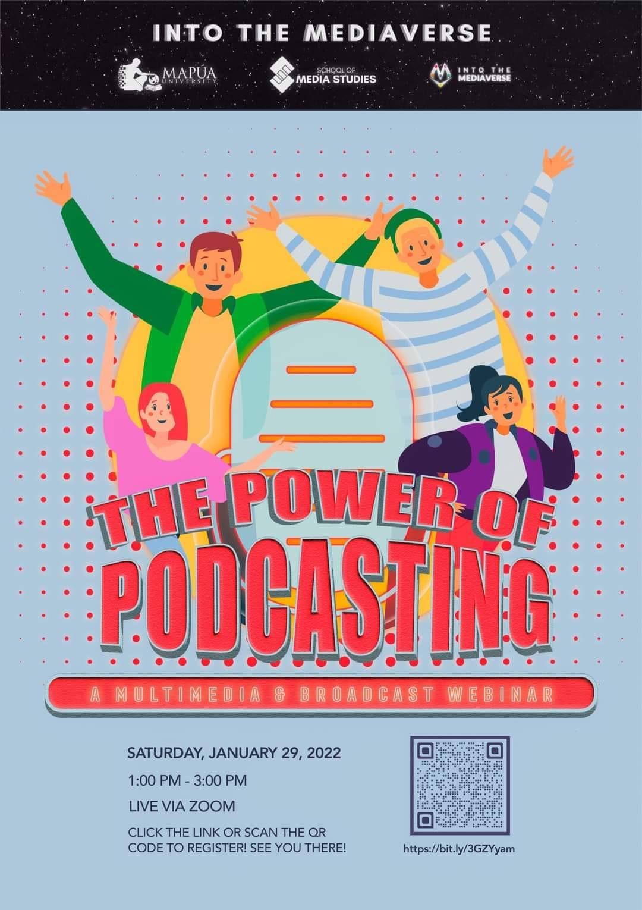DOST - PCIEERD
January 26 2022, 1:27 P.M.
Watch Mapúa University, together with the Department of Science and Technology – Philippine Council for Industry, Energy, and Emerging Technology Research and Development (DOST-PCIEERD) and Digital Pilipinas Academy, launch tomorrow the DOST Mapúa Think and Tinker Laboratory, our University’s innovation hub dedicated to developing digital tools and solutions for education. Gracing the event are Mapúa president and chief executive officer Dr. Reynaldo B. Vea and the leaders in various emerging technologies. To attend the launch, please register at https://tinyurl.com/48hadab7.

Voter Education
January 25 2022, 3:18 P.M.
As the 2022 National Elections draw near, let us prepare ourselves to become agents of positive change in our country. Join the discussion on the importance of exercising our right to vote and of making an informed decision in this Voter Education Forum organized by the Mapúa University Central Student Council on January 28, 2022, from 9 a.m. until 12 p.m. Register at https://bit.ly/VotersEducationForum2022.

Multimedia Arts
January 25 2022, 11:27 A.M.
Are you leaning towards taking Multimedia Arts? The School of Media Studies, Mapúa University prepared something for you. Get a glimpse of the in-demand careers and multimedia arts specializations in Photography, 2D Animation, and Video Editing as everything goes digital in this free 2-day webinar series entitled "Multimedia Arts: A Study About the Arts for Generation Z," happening on January 28, 1 p.m. to 3 p.m., and January 29, 5 p.m. to 6 p.m. Register now at https://forms.gle/JWsfPvm4Aq6Ukeii7.
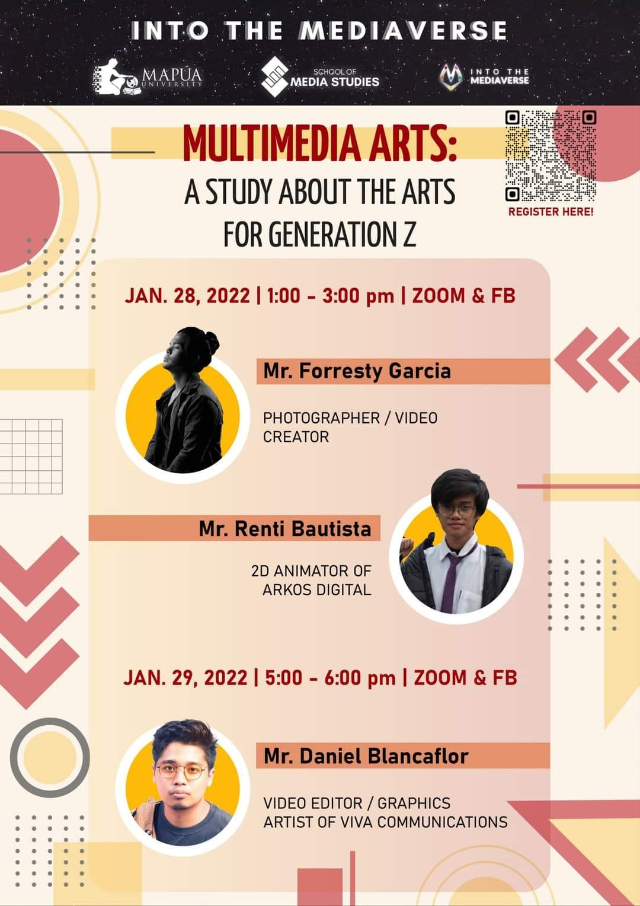Techniques in Research Paper Writing and Publishing
January 24 2022, 2:15 P.M.
WATCH: In this webinar of the Office of International Linkages for Research and Development entitled “Techniques in Research Paper Writing and Publishing,” Osaka University's Dr. Melvin John Empizo shares his actual writing experiences as well as some important techniques on how to properly write research papers.

Under The Auspices of Engineers
January 20 2022, 7:46 P.M.
Listen and learn from distinguished speakers Dr. Marla M. Redillas, Division Head of Hydraulics and Water Resources in the Civil Engineering Department at De La Salle University-Manila, a Board Member of the International Water Association, and an Editorial Committee member in Journal of Wetlands Research, and Dr. Guillermo Tabios III, Professor Emeritus at University of the Philippines Diliman, who was awarded as the Outstanding Agricultural Engineer in Land and Water Resources by the Society of Agricultural Engineers in 2009 and University of the Philippines Diliman‘s Outstanding Researcher in 2006, as they tackle topics on sustainable coastal development, water security, and waterway management.

Math147 Tutorials
January 5 2022, 4;49 P.M.
Mapúans, the Mathematical Society of Mapua - MSM will be offering tutorials from January 6 to 8, 2022. Check out the post below for the complete schedule and assigned topics per day. Students who are interested to attend the tutorials may register at https://bit.ly/Math147Module2Review.
VBA Macro
January 4 2022, 9:28 P.M.
Expand your skills in automating and formatting data in Excel projects and reports in this free webinar on VBA Macro from 2 to 3 p.m. on January 6, 2022, organized by the Mapua - Center for Continuing Education and Special Competencies (CCESC). Interested participants may register at https://forms.gle/fquSz2HFyFR3KqhbA.